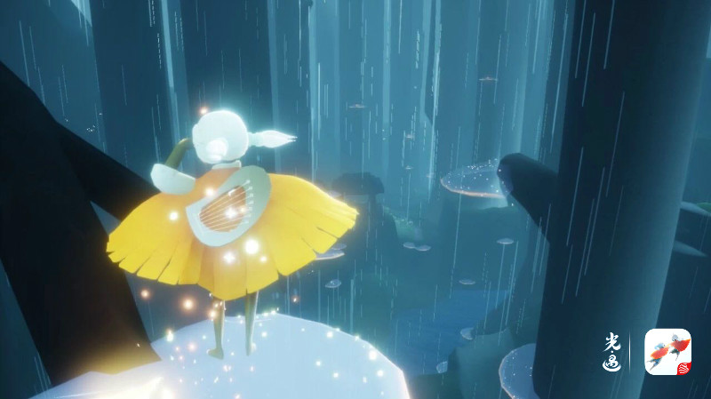

雨林是光之王国的拓荒中后期,
矮人面具先祖的正式名字就叫“躲猫猫拓荒者.
在这个时期，王子在雨林深处发现了黑暗石。
这种石头可以收集光能，从此成为光之王国的重要能源。
跃下雨林小广场，跟随白鸟的指引，玩家将来到雨林的第一个场景——静谧庭院。 俯瞰整个场景，庭院设置了层层大门，仿佛在预示着前方未知的危险。
遮云蔽日的灰暗森林与莹莹发光的光之生物交织成一幅光与暗奇妙融合的景象。 层层叠叠的光菇点缀在森林之间，旅人可通过光菇补充能量飞往高处。
雨林神庙的入口在密林遗迹的高处，玩家需要借助透明水母强大的光之能量跨越悬崖。 巨型水母具有一定的吸力，控制好飞行的起幅和落点去靠近水母，旅人们就可以被水母吸附住，逐个跳跃便可到达神庙。